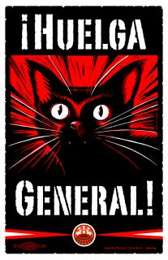

Submitted on Thu, 01/05/2012 - 6:38pm
Originally posted on libcom.com - November 11, 2011
Jessica Mitford wrote:
Oakland was still at the frontier, where the issues were sharper,
the corruption cruder, the enemy more easily identifiable…
There was nothing abstract about the class struggle in Oakland.
—Jessica Mitford in
A Fine Old Conflict (1977)
Oakland, California has historically suffered by being in the shadow of the golden allure of San Francisco across the Bay. From the Gold Rush to the Summer of Love to the Castro District as a Gay Mecca to the Dot.com Boom, San Francisco has been known around the world as a magnet for get-rich-quick dreamers, bohemians and idealists. Berkeley, bordering Oakland on the north, was the birthplace of radical student agitation throughout the 1960s, beginning with the Free Speech Movement on the University of California campus in 1964. Oakland has always been a gritty industrial town, whose working class residents have ranged from reactionary whites in the Ku Klux Klan (in the 1920s) and Hells Angels (after World War II) to blacks at the cutting edge of civil rights struggles, and today is one of the most ethnically diverse cities in the U.S. Oakland was thrust onto the world stage in 1966 with the Black Panther Party and its militant self-defense of the African American community.
The radical history of the Bay Area is like a giant tapestry and its threads run through the whole region. Telegraph Avenue is 4.4 miles long; it merges into Broadway at Latham Square on the Oakland end, the exact location of the strike of women retail clerks at two department stores on either side that sparked the 1946 General Strike. That strike led to the Taft-Hartley Act (the 1947 federal law banning strike and solidarity tactics that make general strikes possible) six months later and was the beginning of Cold War politics that smothered class struggle for a generation. On the Berkeley side, Telegraph ends at Bancroft Way right at Sproul Plaza on the U.C. Berkeley campus. Exactly 18 years later, on the exact day that the Oakland General Strike was officially declared, December 3rd, the Cold War began to thaw in a mass arrest of over 800 (the largest mass arrest up to that time in California) at a Free Speech Movement sit-in at Sproul Hall. Several of those student protestors had been radicalized by participating in Civil Rights organizing in the Deep South for the Congress of Racial Equality (CORE); many had taught at Freedom Schools. For the rest of the sixties, U.C. Berkeley was shut down several times due to mass student strikes and protests, including a month-long occupation of People’s Park by the National Guard, sending waves outwards as the youth revolt spread throughout the world.
Even within Oakland, the tapestry has threads that are deeply rooted in previous periods of heightened class struggle, having cross-fertilized with other radical movements across the country, as well as the world. Being that San Francisco is at the tip of a narrow peninsula, surrounded on three sides by water, Oakland became the mainland terminus of the transcontinental railroad when it was completed in 1869. Trains ran along 7th Street through West Oakland to the Mole, a railroad wharf complex extending into the Bay where ferries completed the journey west to San Francisco. During the nationwide Pullman Railroad Strike of 1894, workers occupied the tracks around the Mole, disabled trains, and the whole community prepared to defend the strike. In subsequent years, landfill pushed further into the Bay and the site of the Mole is at the heart of the current Port of Oakland, the destination of our mass march and shutdown during the attempted General Strike on November 2nd.
The Black Panthers had a significant base in West Oakland, where massive railroad yards had been built at the western terminus of the transcontinental line. A thread, although tenuous, connected them with the legacy of African American railroad porters who settled there a generation before. The area became the West Coast organizing center for the Brotherhood of Sleeping Car Porters, a socialist union founded in 1925. The Brotherhood came out of the radical ferment of that era; in October 1919 Brotherhood founder A. Philip Randolph wrote in The Messenger, “The Negroes and the Industrial Workers of the World have interests not only in common, but interests that are identical.” The IWW, whose member are called “Wobblies,” is an interracial revolutionary union founded in 1905 in Chicago that adopted a class struggle approach to organizing through direct action and the strike weapon, striving towards class consciousness and the general strike, with the ultimate goal being the creation of a classless society.
The Wobbly spirit – best embodied in the opening lines of the IWW preamble: “The working class and the employing class have nothing in common” – was pervasive in the Bay Area, especially in the class unity, solidarity actions, sympathy strikes that exploded into many mass strikes and in turn led to at least two full-blow general strikes.
 By John Reimann - Fellow Worker Reimann has been involved with Occupy Oakland, along with several other members of the Bay Area IWW since its inception. The opinions expressed here are the author's alone, though they generally reflect the views of many others who are active in OO and are rank and file union members.
By John Reimann - Fellow Worker Reimann has been involved with Occupy Oakland, along with several other members of the Bay Area IWW since its inception. The opinions expressed here are the author's alone, though they generally reflect the views of many others who are active in OO and are rank and file union members.